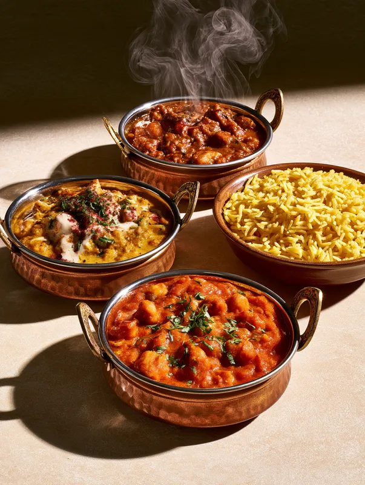
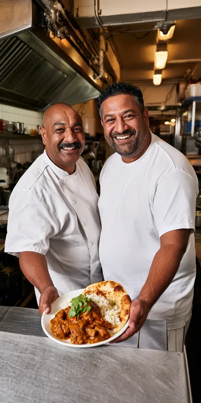
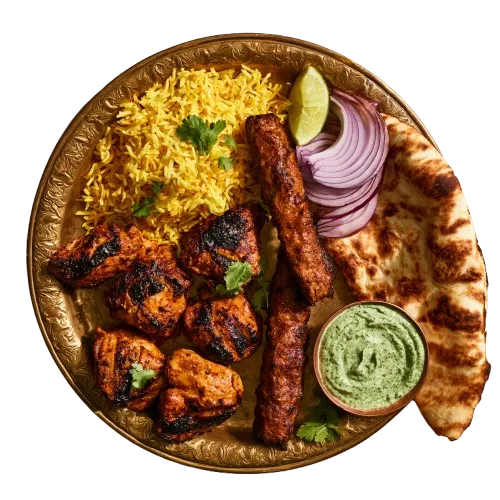
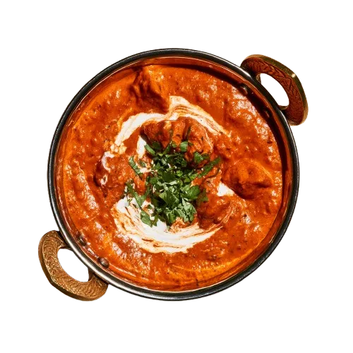
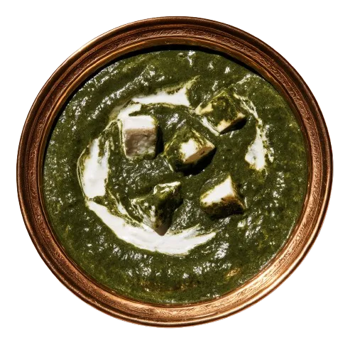

Das Murgh Makhani ist das beste, das ich außerhalb von London gegessen habe.
Nina B. · vor 2 Wochen
Tauchen Sie ein in die Welt der nordindischen Küche. Anaar ist ein Familienbetrieb, der seit über 20 Jahren für ehrliche indische Spezialitäten steht und heute in zweiter Generation geführt wird.
Wir verbinden die Rezepte unserer Familie mit frischen Zutaten und Gewürzen, die wir jeden Morgen selbst rösten und mörsern. Von den Spezialitäten aus dem Tandoor bis zum Dal, der zwölf Stunden zieht, wird jedes Gericht einzeln zubereitet.
Schon beim Betreten tauchen Sie ein in die indische Kultur. Unsere Servicekräfte beraten Sie bei der Bestellung und sprechen Empfehlungen aus, auch zu den Gewürzen und Weinen. Natürlich können Sie telefonisch bestellen und Ihr Menü auf dem Weg nach Hause abholen.
Ihre Familie Anand


Lassen Sie sich von unseren Vorspeisen und Suppen auf eine Reise durch Indien entführen. Samosa, Pakora und Chaat mit frischen Chutneys sorgen für den Start Ihres Menüs.
Alle Vorspeisen →
Über Nacht in Joghurt und Masala eingelegt, dann bei 400 Grad an die Wand des Lehmofens. Von zartem Hähnchen über Lammspieße bis zu Garnelen in Ajwain.
Alle Tandoori-Gerichte →
Vom milden Korma mit Mandel und Safran bis zum Vindaloo aus Goa, das wirklich scharf ist. Die Schoten auf der Karte zeigen, wie wir es in Delhi servieren würden.
Alle Currys →
Die indische Küche ist von Haus aus reich an vegetarischen Gerichten. Palak Paneer, Chana Masala und ein Dal Makhani, der zwölf Stunden auf kleiner Flamme zieht.
Alle vegetarischen Gerichte →Das Murgh Makhani ist das beste, das ich außerhalb von London gegessen habe.
Nina B. · vor 2 Wochen
Endlich ein Vindaloo, das wirklich scharf ist. Und das Naan kommt heiß aus dem Ofen.
Tobias R. · vor 1 Monat
Wir waren zu sechst und haben quer durch die Karte bestellt. Kein Gericht war schwach.
Yasmin K. · vor 3 Wochen
4,7 ★★★★★ 184 Bewertungen bei Google
Heute bis 23 Uhr geöffnet
Musterstraße 14, 38100 Braunschweig
0531 / 000 000